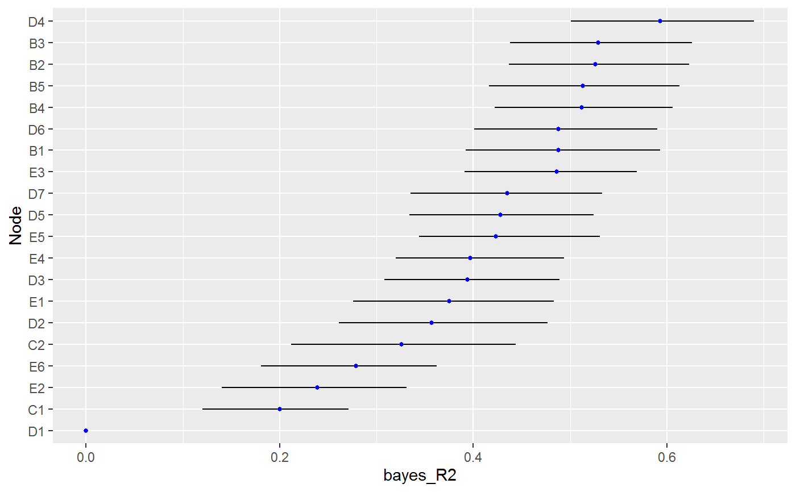

predictability.RdCompute nodewise predictability or Bayesian variance explained (R2 Gelman et al. 2019) . In the context of GGMs, this method was described in Williams (2018) .
predictability( object, select = FALSE, cred = 0.95, BF_cut = 3, iter = NULL, ... )
| object | object of class |
|---|---|
| select | logical. Should the graph be selected ? The default is currently |
| cred | numeric. credible interval between 0 and 1 (default is 0.95) that is used for selecting the graph. |
| BF_cut | numeric. evidentiary threshold (default is 3). |
| iter | interger. iterations (posterior samples) used for computing R2. |
| ... | currently ignored. |
object of classes bayes_R2 and metric
Binary and Ordinal Data:
R2 is computed from the latent data.
Mixed Data:
The mixed data approach is somewhat ad-hoc see for example p. 277 in Hoff (2007) . This is becaue uncertainty in the ranks is not incorporated, which means that variance explained is computed from the 'empirical' CDF.
Model Selection:
Currently the default to include all nodes in the model when computing R2. This can be changed (i.e., select = TRUE), which
then sets those edges not detected to zero. This is accomplished by subsetting the correlation matrix according to each neighborhood
of relations.
Gelman A, Goodrich B, Gabry J, Vehtari A (2019).
“R-squared for Bayesian Regression Models.”
American Statistician, 73(3), 307--309.
ISSN 15372731, doi: 10.1080/00031305.2018.1549100
.
Hoff PD (2007).
“Extending the rank likelihood for semiparametric copula estimation.”
The Annals of Applied Statistics, 1(1), 265--283.
Williams DR (2018).
“Bayesian Estimation for Gaussian Graphical Models: Structure Learning, Predictability, and Network Comparisons.”
arXiv.
doi: 10.31234/OSF.IO/X8DPR
.
#>#>r2 <- predictability(fit, select = TRUE, iter = 250)#> | | | 0% | |==== | 5% | |======= | 10% | |========== | 15% | |============== | 20% | |================== | 25% | |===================== | 30% | |======================== | 35% | |============================ | 40% | |================================ | 45% | |=================================== | 50% | |====================================== | 55% | |========================================== | 60% | |============================================== | 65% | |================================================= | 70% | |==================================================== | 75% | |======================================================== | 80% | |============================================================ | 85% | |=============================================================== | 90% | |================================================================== | 95% | |======================================================================| 100%# summary r2#> BGGM: Bayesian Gaussian Graphical Models #> --- #> Metric: Bayes R2 #> Type: continuous #> --- #> Estimates: #> #> Node Post.mean Post.sd Cred.lb Cred.ub #> B1 0.486 0.048 0.402 0.583 #> B2 0.525 0.051 0.441 0.632 #> B3 0.522 0.048 0.435 0.619 #> B4 0.512 0.047 0.422 0.612 #> B5 0.510 0.050 0.416 0.603 #> C1 0.199 0.045 0.112 0.281 #> C2 0.325 0.054 0.233 0.430 #> D1 0.000 0.000 0.000 0.000 #> D2 0.358 0.046 0.279 0.442 #> D3 0.397 0.047 0.311 0.487 #> D4 0.590 0.051 0.508 0.697 #> D5 0.430 0.050 0.317 0.534 #> D6 0.488 0.051 0.403 0.600 #> D7 0.441 0.050 0.339 0.557 #> E1 0.377 0.050 0.272 0.471 #> E2 0.239 0.048 0.141 0.335 #> E3 0.486 0.053 0.391 0.569 #> E4 0.396 0.049 0.307 0.495 #> E5 0.424 0.048 0.339 0.522 #> E6 0.281 0.049 0.186 0.380# }